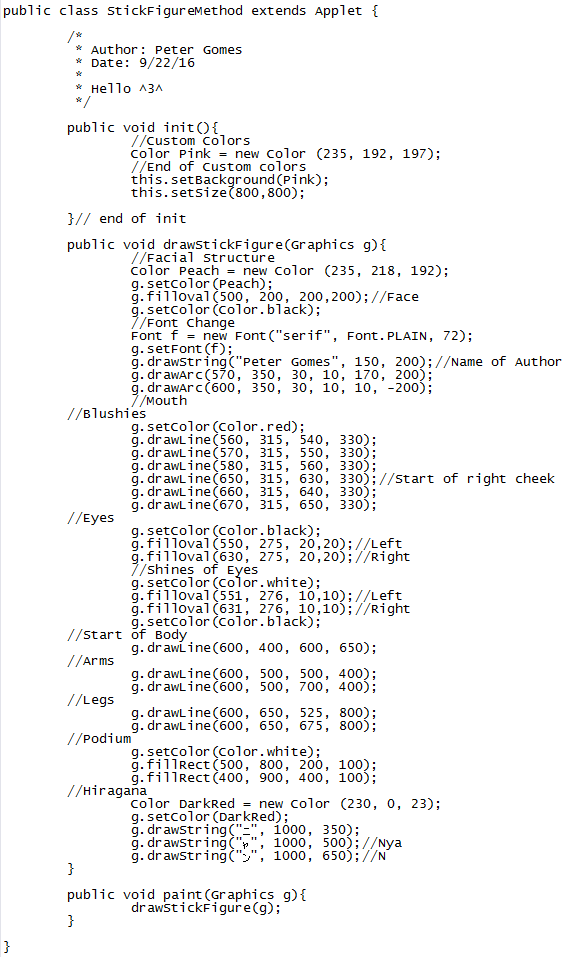
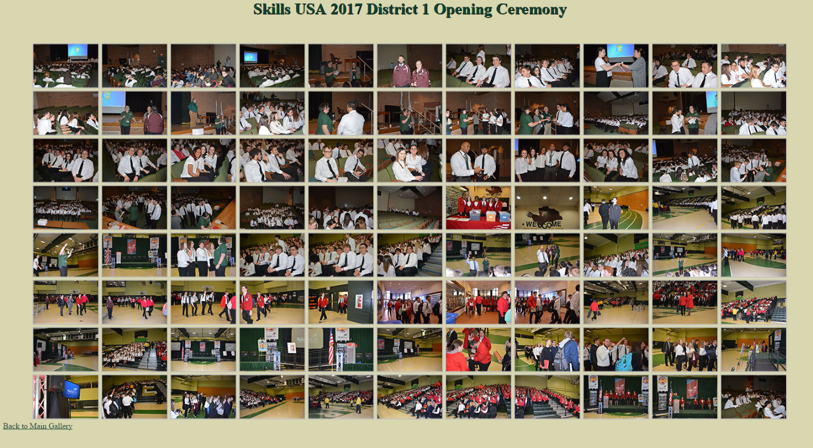

Junior Work Samples
Sophomore SeniorFrom Figure to Methods
September 30, 2016
Click Here To Open PDF
SUMMARY:As a junior in GNB Voc-Tech studying Programming and Web Development, I achieved a deep understanding in how to transition from an old project from sophomore year into something more convenient and simple for programmers to use. First of all, I analyzed the aged project and began to reference it into a method. Afterwards, I tinkered with parameters within methods to change factors of the stick figure without having to touch the project from inside the method. Finally as I got an understanding of the two concepts, I splintered the projects accessible to me into multiple methods to the point where I can call specific parts of the figure in their own methods. By understanding the logic of methods, it makes code a lot more reusable, flexible, maintainable, and readable.
BACKGROUND:
In order to get started, I needed to scrutinize the old project to get a basic idea of how the process of drawing the stick figure functioned. To begin, I searched for and opened up the project. Following this, I examined the code in order to refresh my mind with how I created the program about a year ago. Lastly, I conducted a couple of test cases to insure that the original code functioned properly.
MATERIALS:In order to efficiently perform this, you will need to make sure that you have JRE (Java Runtime Environment) on your computer and some kind of IRE (integrated development environment) such as Eclipse or NetBeans to edit / run your code.
PROCEDURE:The first of three procedures happened to be to simply place the stick figure code into a method and gain the power to reference it within the paint method. To start, I organized the skeleton for an applet (assuming you have a workspace and class developed for the code). Such processes include importing Applets before the class method and forging both an “init” method and a ‘paint” method (note to use graphics for the paint parameters). Next, I manufactured a new method within the main class with a name relevant to the task, for example “drawStickFigure”. Third, I copied and pasted part of the original stick figure program that drew the object into the custom method produced within the newly made file. To finish it off, I generated a command in the paint method to reference the method “drawStickFigure” in its entirety. By following these steps, I received a basic understanding of how methods work and can be used within the coding environment.
After the completion of the previous project, I started a new one applying specific parameters into our methods. With this knowledge, I should be able to change the x and y coordinates of the entire stick figure by only changing two parameters from referencing my method. To begin the program, I first copied and pasted the previous class. Then, I edited the custom method (in this case “drawStickFigure”) to require two int parameters to be able to be function, which will eventually become the x and y of the stick figure. After that, I configured the code inside the method so that the coordinates of each part drawn refer to the two parameters given as the “point of origin”. Fourth, I manipulated the code that references my custom method by adding two integers (for example: 100 and 100). By gathering a deep understanding of both methods and parameters, the purpose of methods should become clearer in projects.
Now knowing how to use methods and parameters to improve my code, I could then delve deeper into the logic of methods and break down the stick figure. In order to break it down completely, I needed to make multiple projects and with each, break down the figure into smaller and simpler parts. First, I split my program from before to draw the head and body in their own separate methods, while still connecting to each other. Second, I broke down the head and body to different sub parts. The head separated into eyes, face, and mouth while the body divided into arms, legs and torso (since my project consisted of more than just a stick figure, I applied a method to draw the rest of the image). Third, I went even deeper by now referencing each eye with the same method and even each limb (arms and legs) with only one method to put my knowledge to the test. Having completed these accurately, this ensured that my understanding of what methods are used for and the whole logic behind them is completely scratched and noted in my mind.
RESULTS:After the completion of each project, test cases were run in order to double check the precision of the code compared to the expected result I imagined. For most of these projects, the cases were fairly simple (the first project I ran the code to test it). I only needed to change the x coordinates and the y coordinates of the stick figure when referencing the method. With these cases, I searched for two things in particular: ensuring the figure appeared and that all of the parts linked together despite the x and y given. With the knowledge bestowed upon me, this can lead me into understanding and coding projects in a much simpler way than I knew before. Thankfully, the results I expected almost perfectly correlated with what actually occurred.
CONCLUSION:Fortunately, doing this succeeded and established my insight on methods. The objective of building such projects happened to be learning method flexibility and reusability. We can reference one method for many tasks, such as drawing limbs. Now we can simplify our project to the point that everything method performs a single action. Methods can make future projects such as calculators or even games and breeze to logically break down and program, no matter what the computer language may be.
stick figure with just one method.
enhanced with parameters to
change the x and y.
but now drawing everything
with its own method.
The class for the first stick figure, using only one method to call the entire stick figure.
Mail Merge – Letters Made Easier
February 1, 2017
Click Here To Open PDF
SUMMARY:During my junior year in Programming and Web Development, I acquired the skills necessary for the creation of a mail merged letter. In order to perform this task, the user must make a data source and use the information located inside of the file to conveniently add different fields to a letter. With a merged letter, the user can use a letter template and using a data source, use different records to forge multiple versions of the same document with little to no effort.
BACKGROUND:
Before starting this project, there were a few different projects that helped me prepare for the task. Before any assignments, I needed to know how to format a business letter. By knowing this, I could create a professional look to my documents. Also, I learned the parts of the letter and how to create a custom letter head in order to get a better understanding of how to write business letters efficiently. Forging magazine subscription letters, two Mad Libs (Thanksgiving and Christmas related), a holiday letter and mailing labels were the assignments given to me. By accomplishing these tasks with minimal error, I comprehended the concept of basic mail merge requests.
I made for a document.
- Microsoft Office Word 2010
- Mailings Tab located on the ribbon
- Start Mail Merge located in the Task Pane
To begin the exercise, the data source file must be formed and manipulated. This is where all of the information for the mail merge will be located. To get started, open a word document and left click the “Mailings” tab in the ribbon of the software. You will be introduced to five sections in the task pane with a bunch of different tasks available. Click “Select Recipients” in the “Start Mail Merge” section. A dropdown menu will appear. Press the “Type New List” button from the given options (or “Use Existing List” if you already have a data source and find the file from its directory). A dialog box will pop up titled “New Address List”. The data source comes with default columns, otherwise known as fields. In order to change these, click the “Customize Columns” button near the bottom left of the box. Another box should pop up with a list of the field names. From here, you can now start formatting what information that will be kept track of.
data source file, these dialog boxes
appear to help you get started.
Next, you must change the field and start filling in the entries with records. With the dialog box named “Customize Address List”, you may perform many different options. The “Add” button fixes a new column to the existing fields that you already have. In order to use this function properly, click the “Add” button and enter your desired name for the column. The “Delete” button eliminates an existing column from the array of field names present. To perform this action, select the field you want to get rid of and press the button. Finally, the “Rename” button appends a new name to existing fields by clicking the field you want to change and pressing the corresponding button. In addition to these functions, the “Move Up” and “Move Down” buttons organize the position of each row accordingly. Once all of the fields are set to your liking, click “OK” to exit the “Customize Address List” dialog box. In the “New Address List” box from before, you can start adding records depending on the fields you made. To add a new row of data, be sure to press the “New Entry” button in the bottom right. If deleting a row is required, the “Delete Entry” button obliterates the entry highlighted. After you cease to add more information, click the “OK” button and save your data source file. It will save as a Microsoft Access file, so if you need to make a quick fix, you may do so in Access. It’s just a matter of preference.
that you could add to your
data source. The field
names are shown on top.
The final and most important step to mail merge is to start add the fields to your document. Begin the creation of your document. Whenever you have a place in your document that you need to insert a field, you may do so by directing yourself to the “Mailings” tab and clicking on “Insert Merge Field” in the “Write & Insert Fields” section. A dropdown should appear, and select the desired field that you would like to incorporate to the file. To finalize the project, go to the “Mailings” tab and select “Finish & Merge” in the “Finish” section. This should now complete the process of mail merging.
I also needed to create mailing labels for each record. The directions below describe step by step on how to do so.
- Mailings
- Start Mail Merge
- Labels
- Select Correct Labels Avery US Letter 5160
- Select Recipients
- Use Existing List
- Address Block
- OK
- Update Labels
- Finish & Merge
- Edit Individual Documents
- CTRL+A
- No Spacing
- Times New Roman 12 pt
the project, you can preview the
different mail merge letters you have created.
After the completion of each project, test cases were run in order to double check the precision of the code compared to the expected result I imagined. For most of these projects, the cases were fairly simple (the first project I ran the code to test it). I only needed to change the x coordinates and the y coordinates of the stick figure when referencing the method. With these cases, I searched for two things in particular: ensuring the figure appeared and that all of the parts linked together despite the x and y given. With the knowledge bestowed upon me, this can lead me into understanding and coding projects in a much simpler way than I knew before. Thankfully, the results I expected almost perfectly correlated with what actually occurred.
CONCLUSION:Fortunately, doing this succeeded and established my insight on methods. The objective of building such projects happened to be learning method flexibility and reusability. We can reference one method for many tasks, such as drawing limbs. Now we can simplify our project to the point that everything method performs a single action. Methods can make future projects such as calculators or even games and breeze to logically break down and program, no matter what the computer language may be.
Making a Photo Gallery
March 31, 2017
Click Here To Open PDF
SUMMARY:During my junior year in Programming and Web Development, I took the initiative to generate some galleries for my school’s website. First, I sorted the pictures given to me from specific events. Next, I resized all of the pictures I used for both the images and thumbnails of the intended gallery. Finally, I appended the pictures to a new web page to create the digital gallery. Knowing how to organize images and incorporate them all into a webpage is a great tool that will be needed in the field of web design and computers.
BACKGROUND:
Before beginning the project, I needed prior knowledge of a couple of computer concepts. The project required an extensive background in HTML. It is also mandatory to know the environment around Photoshop or any photo editor that you may choose (the procedure is exclusive for Photoshop). With this information in mind, the photo gallery can be assembled with ease.
SOFTWARE:
- Adobe Photoshop CS5
- Notepad
- Windows Explorer
To start the project, you need to receive the pictures that you’re going to use for the photo gallery. For me, I took the pictures from my teacher’s computer using a flash drive, but the location, quantity, and size of the pictures may vary. Next, with the flash drive allocated the pictures to, drop the photos onto your desktop for now, preferably into a folder. After that, open the folder and direct yourself to where the array of images is stored. Double click on the first image’s thumbnail to view the full sized photo. If you like the picture, simply move on to the next one with the right arrow key. If you do not like the picture, you can delete it using the delete button. A pop up will ask you to confirm the action. Click the Yes button to delete the file. Do this until you’ve gone through all of the photos and have your desired amount.
sorted for the gallery.
You can have as many as you would like.
Afterwards, since my pictures are far too big for the gallery, I need to resize them all. But seeing that I have a large amount of pictures, resizing them individually poses a problem. An alternative to this is performing an automated batch with Adobe Photoshop. First, open Photoshop, open one of the pictures, click “Window” in the ribbon, and press the “Actions” button from the dropdown menu. In the Actions window, click the “Create New Action” icon (it looks like a folded paper). After that, there should be a pop up in the center of the screen. Name the action to whatever you want and then click Record. After that, resize the picture by selecting “Image” in the ribbon and then “Image Size”. Enter in the dimensions needed for the image. (I used 900 pixels x 600 pixels, 72 resolution). Once the image is resized, end the action by pressing the “Stop Playing” button (the icon is a plain square). Do not save just yet. Once the action is complete, go to “File” in the ribbon, “Automate”, and then “Batch”. In the popup, make sure that the “Source” on the left side is set to “Folder” and the action is set to the one that was just made. Select the “Choose” button below and find the folder holding your pictures. Next, set the destination to “Folder” and choose the folder where you want the new images to be produced. The next steps pertain to renaming the files. In the first combo box, type the name you want for all of the files. A number will be added right after this name. To do that, select a “Digit Serial Number” in the next combo box relatable to the total number of pictures in the batch (for example, 5 pictures is one digit, 78 pictures is two, et cetera). Next in order, choose “extension” under the digit combo box. Lastly, click “OK”. If an “Options” popup appears, always press enter or select “OK”. Repeat the batch for thumbs as well with a smaller size.
when you create an
automated batch.
Now that the pictures and thumbnails are set for the gallery, they need to be appended to the actual page. First, I copied an older example that I made months ago into Notepad. Make sure you save the file and have the file type as .htm or .html. If you do not have one, just copy an existing example of a photo gallery. After forging the new file, manipulate the information in the tags to conform to your page (for example, since my gallery was based on a SkillsUSA opening ceremony, I changed the title and header to fit that. The last and crucial step to making the photo gallery is to now add the pictures and thumbnails. This is possible by going to where the directories for the photos in the old gallery are and simply changing them to fit the directories for that you constructed.
I also needed to create mailing labels for each record. The directions below describe step by step on how to do so.
of the code that I used to make the
photo gallery for the school web site.
What to expect from the project is a page with all of your thumbnails arranged into a table. When you click any thumbnail, the corresponding full sized image should appear in the center of the screen.
CONCLUSION:In the end, when the tasks were finish, you should have a photo gallery with a bunch of images tailored to the topic of your photo gallery. This activity was used to teach how to obtain and sort out pictures, how to create an automated batch in Adobe Photoshop, and how to tinker with the HTML file to make your photo gallery. With a photo gallery, you can organize multiple pictures into a simple and attractive page for anyone to see.
This screenshot is the live photo gallery on the school web site.
